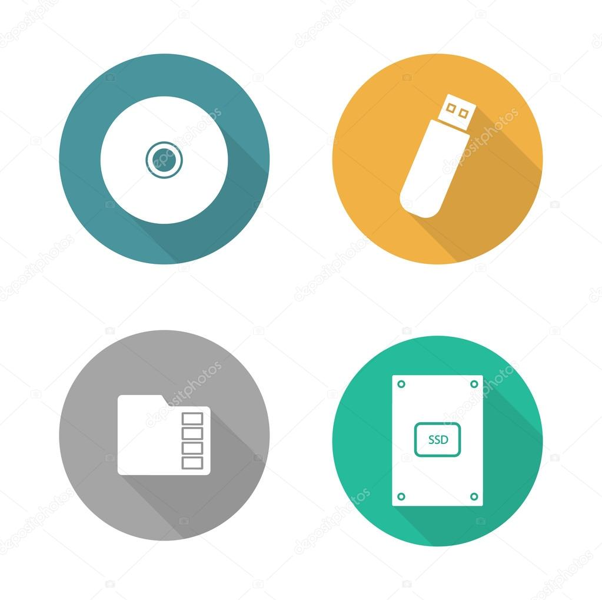

In this chapter we will be covering form of secondary storage
and compare the advantage and the disadvantages of each type.
It is important to consider that why we need to back-up data and also how data are accesess.
On this chapter we will be covering
'what is backing up data and why?',
Secondary storage media, magnetic storage media, solid state storage media,
and optical storage media.
Backing up refer to the copying of data to a storage unit like disk, tape, flash drive, etc.
This is a common thing for computer to backing up their data, it is like a basis for computer to buck up the data. Many computer can back up data automaticly.
An example of that would be the magnetic tape to back up the internet severs or cloud storage company
using magnetic tape or hard disk o drive to back up client's on a regular basis. The backup are often stored in a different place to the main storage.
This is becasue in case of fire or some some other siduation that could lead to irretrievable lost of key data/files.
Ther are many reason why you need to backing up your computer data.
Secondary storage device ensure the data to be permanently stored in there so that it can be used later. The term 'bytes' represent the amount of storage you have and the space you could stored. The file size can be measured in kilobytes (kB), megabyte (MB), gigabyte (GB), terabyte (TB). These are the simple storage unit for an ordinary computer.
| Storage Size | Number of Bytes | Number of Bytes In Power of 10 |
|---|---|---|
| kilobyte (KB) | 1000 bytes | 10^3 bytes |
| megabyte (MB) | 1,000,000 bytes | 10^6 bytes |
| gigabyte (GB) | 1,000,000,000 bytes | 10^9 bytes |
| terabytes (TB) | 1,000,000,000,000 bytes | 10^12 bytes |
Secondary storage device fall into these devices: Magnetic, Optical, and Solid state. Example of those storage device consist of: